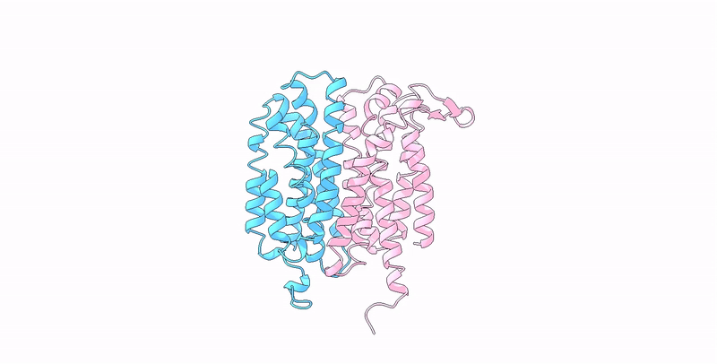
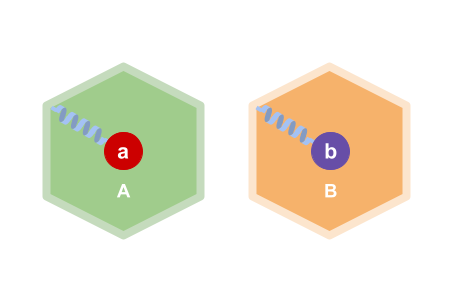
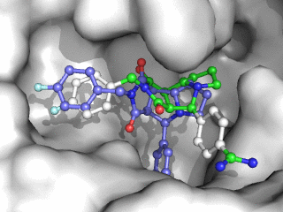
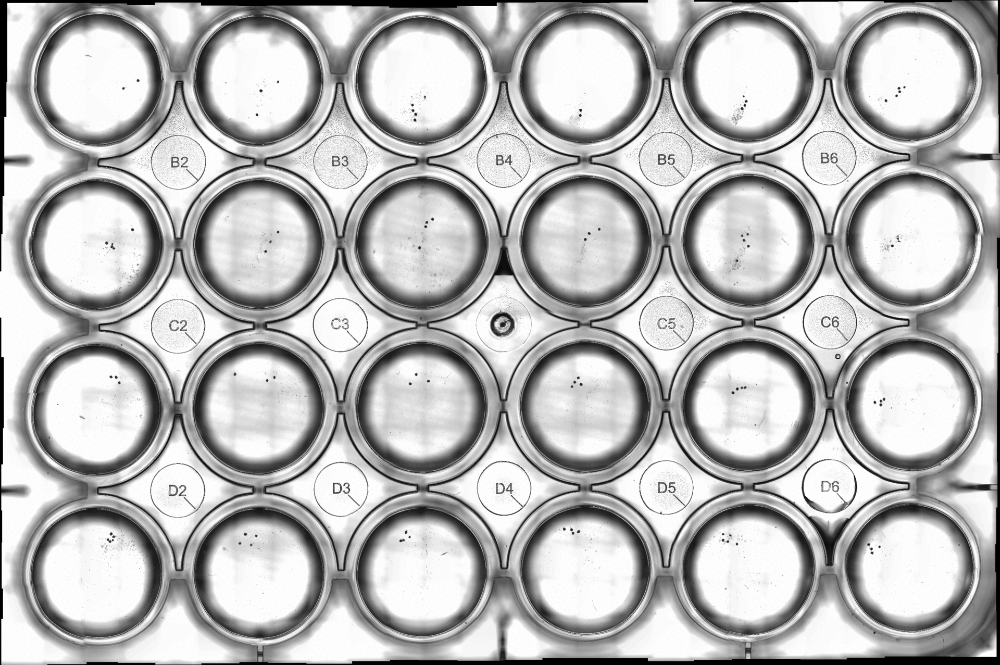
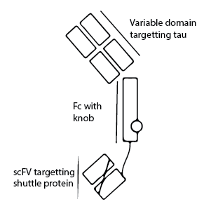

Amyotrophic lateral sclerosis (ALS) with frontotemporal lobar degeneration (FTLD) are neurodegenerative diseases characterized by decline in behaviour, movement, and cognitive activity. The brains of patients afflicted by ALS/FTLD have been found to frequently develop particular protein aggregates, lending to the belief that they have a correlative relationship with the disease. It is thus important to characterize these protein aggregates to uncover any potential causal mechanisms of disease progression, or to pave the way to developing treatments that can interfere with the progression of the disease. In this project, I had access to cryo-EM micrographs of purified samples of post-mortem brain tissue of patients with ALS and FTLD type B. From the data, I managed to characterize a TMEM106B singlet filament to 3.3 A resolution, as well as help resolve the doublet morphology, replicating the findings of Arseni et al. Through this project, I learned how to use the command line to run jobs on a cluster, write scripts to manipulate large amounts of data, familiarized myself with cryo-EM, as well as the process of helical reconstruction in RELION: from preprocessing, running processing jobs to clean the particle stack, creating accurate initial models, as well as post-processing.

As antibiotic usage becomes increasingly widespread, so too has bacterial antibiotic resistance. An alternative to antibiotics, which also prevents this issue, is antimicrobial peptides (AMPs). AMPs are common peptides produced by many organisms against bacteria. Due to their more complex, proteinaceous nature, they are less easily defended against by bacteria compared to small molecule antibiotics, making it promising at circumventing antibiotic resistance. However, unlike small-molecule antibiotics which can be easily produced by a serious of chemical reactions, AMPs are more difficult to synthesize. As such, under the constraints of working in a full-student team, our iGEM team decided to express these peptides in E.coli to tackle this challenge. Parodoxically, the antibiotic properties of these compounds makes them toxic to our chosen host. As such, using my knowledge on protein biology, I helped pick a suitable nanoparticle to sequester and mitigate their toxicity. In addition to helping clone and produce the protein, I planned protein-dynamics simulations to gauge the feasibility of assembly of the construct, optimized the construct to increase AMP yield, as well as help produce figures and design the website. More info on this project can be found here: https://2022.igem.wiki/michigan/
Solving the different states of a mobile protein can provide insights into its motion and function. However, it is often difficult to obtain all conformations of a proteins due to the necessity of obtaining particles in all states, whether be due to limitations in particle count or the need for inducing a conformational shift. To compensate for this issue, researchers often opt to use homology models or structure prediction to obtain these structures. These strategies are also without fault: homology models are limited by selection quality of templates, whereas structure prediction tends to generate a single state of a protein due to the way MSAs influence on the prediction algorithm. A solution that utilizes more exhaustive searches of templates, as well as reduces the weight of MSAs, is to perform template-guided structure prediction paired with stochastic subsampling of MSAs. This reaps the benefits of knowledge on homologues as well as implements the co-evolutionary information MSAs offer. Using this strategy, I was able to predict the alternative conformation of a membrane transporter that otherwise wouldn't be possible with default conditions.

House mites are common pests in human living spaces. They secrete a protease, Der P 1, which they use to digest dust. When inhaled, Der P 1 traverses through the endothelium and proteolytically acts on our respiratory tract, leading to inflammation. Combined with their prevalence, the sensitization and development of allergies to Der P 1 is a common phenomenon. To combat this, we devised a potential method to obstruct the progression of Der P 1 into the respiratory tract: By linking previously characterized anti-Der P 1 antibodies to a protein scaffold, the valency and avidity of these antibodies can be increased, allowing them to better target Der P 1. Additionally, the larger complexes would also sterically inhibit the target protein from passing through the esophageal membrane, preventing downstream allergenic events. On this project, I choose suitable scaffolds, such as apoferriten or the Baker Lab's I53-50, designed and cloned the construct, as well as wrote methods to validate their assembly, guided by advice of Neil King from the IPD.
Encapsulin nanocages are a class of self assembling protein nanocages large enough to accomodate multiple macromolecules within their lumen. Their diversity, preerential self-assembly, as well as easily manipulateable cargo makes them a suitable platform for an orthogonal expression system. By linking the interior of 2 different encapsulin subunits with proteins of interest, they can be spatially seperated in distinct compartments. In this project, I expressed 2 halves of a split-venus fluorescent protein in the system, assisted in protein purification, as well validated the extent of seperation within the purified samples.

Small molecules in cryo-EM maps aren't always resolveable due to limitations in resolution, flexibility of said small molecules, or general unspecificity of unknown densities. In the absence of definitive functional information, molecular docking serves as a powerful tool to elucidate potential binders, as well as their binding behaviour and pose.
Faced with a transmembrane protein with an unknown ligand, I learned to use various docking software to predict the position and pose of various molecules. I identified a molecule which co-localized with and fit to a distinct unoccupied density, strengthening its validity for further investigation.

I created an organoid measurement program using the scikit-image and Pillow library to automatically detect
and measure the sizes of all organoids in 24-well plate images to more efficiently monitor their growth. 
Alzheimers disease is associated with the formation of Tau filaments. As such, these filaments have been the target of many therapeutic methodologies. One proposed strategy to reduce tau aggregates in the brain is the intravenal administration of anti-tau antibodies. However, due to the presence of the blood-brain barrier (BBB), successful localization of the antibodies in the brain proves a challenge. Furthermore, targetable proteins in the BBB are often present elsewhere in the body, leading to off-target effects. As such, our lab developed a bispecific anti-tau antibody that had a conjugated scFV which targeted a more exclusive BBB shuttle protein, allowing efficient RMT and localization into the brain. I was involved in the cloning process of the scFV half of the mAb. As this was my first experience with wet lab, I definitely struggled a decent bit. Ultimately, this project did serve to deepen my interest in protein design, immunotherapies, as well as neuroscience.
